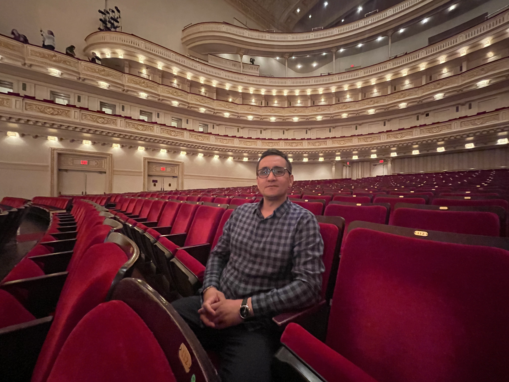

K
lajdi Cerriku
Klajdi Cerriku is a passionate musician and conductor who lives and works in the NJ/NY area. Originally from Europe, He holds a Master’s degree in Music Conducting from the Art Academy in Tiranë, Albania. Known for his versatility, Klajdi is a skilled pianist and accordionist.